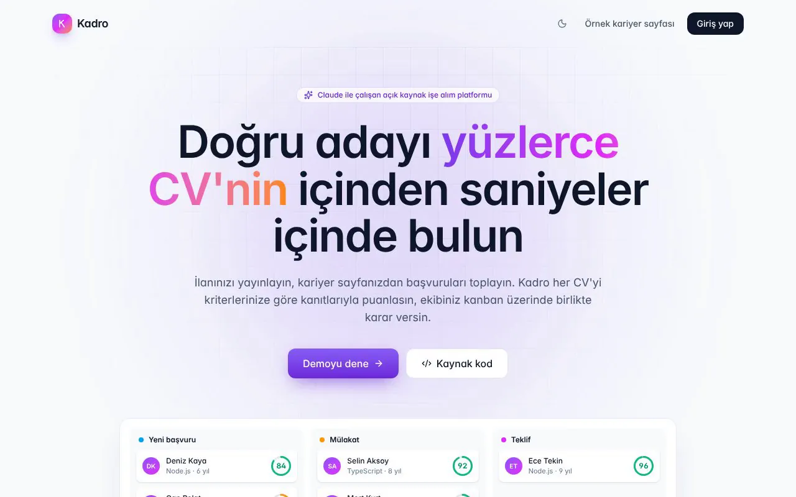

👋 Merhaba, ben
Mustafa Gültürk
Yazılım Geliştirici|
Kullanıcıların gerçekten işine yarayan web ve mobil uygulamalar geliştiriyorum. Temiz kod yazmayı, yeni teknolojiler öğrenmeyi ve fikirleri çalışan ürünlere dönüştürmeyi seviyorum.
–Açık repo
GaziantepKonum
Açıkİş fırsatlarına
01. Hakkımda
Yeni mezun bir yazılım geliştiriciyim. Okul boyunca ve sonrasında kendi projelerimi geliştirerek yazılımın farklı alanlarında deneyim kazandım.
Bir projeye başladığımda sadece çalışmasını değil, okunabilir, sürdürülebilir ve kullanıcı dostu olmasını da önemsiyorum. Takım çalışmasına, geri bildirime ve sürekli öğrenmeye açığım.
Şu anda junior yazılım geliştirici pozisyonlarında yeni fırsatlar arıyorum.
- KonumGaziantep, Türkiye
- Durumİş fırsatlarına açık
- OdakWeb ve mobil geliştirme
- DillerTürkçe, İngilizce
2026
Radar Target Tracker · Kalman ile Hedef Takibi
C++17, Qt ve Kalman filtresiyle UDP üzerinden gelen radar ölçümlerinden çoklu hedef izleyen, sanitizer'lı CI ile test edilen bir simülatör geliştirdim.
2026
Gömülü Telemetri · STM32 + FreeRTOS
C ve FreeRTOS ile STM32 için kendi sürücüleri, watchdog'u ve fail-safe modu olan bir telemetri firmware'i yazdım ve Renode emülatöründe uçtan uca test ettim.
2026
Taktik Mesaj Ağ Geçidi · Go
Go ile bit düzeyinde ikili protokol kullanan, bozuk pakete ve kopan bağlantıya dayanıklı, fuzz testli bir TCP ağ geçidi geliştirdim.
2026
Mezuniyet
Lisans eğitimimi tamamladım ve yazılım geliştirme alanında kariyerime başladım.
2026
Okey Salonu · Online Mobil Okey
React, Capacitor, Node.js ve WebSocket ile hileye kapalı sunucu otoritesi olan, Google Play'e hazır gerçek zamanlı 4 kişilik bir Okey oyunu geliştirdim.
2026
Ocakbaşı · Mobil Restoran Oyunu
TypeScript, Phaser ve Capacitor ile Antep mutfağı temalı, Android'de ve tarayıcıda çalışan bir restoran işletme oyunu ve hileye kapalı bir skor sunucusu geliştirdim.
2026
Kadro · Yapay Zekâ Destekli İşe Alım
NestJS, Next.js, PostgreSQL ve Claude API ile CV'leri kanıtlarıyla puanlayan, canlı çalışan bir işe alım platformu geliştirdim.
2026
Depom · Stok Yönetimi
ASP.NET Core, PostgreSQL ve React ile çok depolu, canlı bildirimli bir stok ve satın alma yönetim sistemi geliştirdim.
2026
QR Sipariş Sistemi
Next.js, TypeScript ve PostgreSQL ile canlı mutfak paneli olan full-stack bir restoran sipariş sistemi geliştirdim.
2026
Berber Randevu Uygulaması
Gerçek bir işletme ihtiyacından yola çıkan randevu yönetim uygulamasını geliştirdim.
2024
İlk web projem
Memleketim Gaziantep'i tanıtan web sitesiyle web geliştirmeye adım attım.
02. Yetenekler
Frontend
- HTML5
- CSS3
- JavaScript
- TypeScript
- React / Next.js
- Tailwind CSS
- Responsive tasarım
Backend
- C# / ASP.NET Core
- Entity Framework Core
- Node.js / NestJS
- REST API
- SignalR / Socket.IO
- PostgreSQL
- Prisma / Drizzle ORM
- Redis / BullMQ
- Claude API
- Python / PyTorch
- Veritabanı tasarımı
Gömülü ve Sistem
- C / C++17
- Go
- STM32 / FreeRTOS
- Qt 6
- TCP / UDP
- Renode
- GoogleTest / Unity
Araçlar
- Git & GitHub
- GitHub Actions
- Docker
- Jest
- Vitest
- xUnit
- VS Code
Yetkinlikler
- Problem çözme
- Takım çalışması
- Hızlı öğrenme
03. Sistem ve Gömülü Projeler
Sistem projesi · C++17
Radar Target Tracker · Kalman ile Çoklu Hedef Takibi
Dönen bir gözetleme radarının UDP üzerinden gönderdiği gürültülü ölçümleri çok iş parçacıklı bir hatta işleyen, Kalman filtresiyle birden fazla hedefi aynı anda izleyen ve sonucu Qt ile klasik bir radar PPI ekranında gösteren simülatör.
- Problem: 30 RPM tarama, 11 hedef ve tur başına ~20 sahte alarm arasında gerçek izleri kaybetmeden takip etmek
- Yaklaşım: 4 durumlu Kalman filtresi, Mahalanobis kapılama, en yakın komşu eşleştirme ve M-of-N iz doğrulama; ağ alıcısı ve izleyici ayrı thread'lerde
- Kalite: GoogleTest birim ve entegrasyon testleri; GCC/Clang, ASan, UBSan ve TSan ile CI
Gömülü proje · C11
Gömülü Telemetri · STM32 + FreeRTOS
STM32F446RE (Nucleo) için firmware ve Python yer istasyonu. Kendi yazdığım I2C sürücüleriyle IMU ve basınç sensörünü 100 Hz okur, irtifayı filtreler ve CRC-16'lı ikili paketlerle UART üzerinden gönderir. Watchdog, sensör kopması algılama ve fail-safe mod vardır.
- Sonuç: 4835 pakette 0 kayıp, %6,3 CPU yükü, sensör döngüsü en kötü durumda 279 µs (10 ms bütçenin %2,8'i)
- Yaklaşım: HAL'siz kayıt seviyesi sürücüler, statik bellekli FreeRTOS (heap yok), görevleri denetleyen watchdog
- Test: sahte I2C yoluyla Unity birim testleri ve Renode'da uçtan uca testler; şimdilik yalnızca emülatörde denendi
$ tmcli encode posrep
c35a 22 80 000a 0014 0001 0d 475e1c635a8bae7440ea82a870 b2b4
SYNC │ │ src dst seq len yük (13 bayt) CRC
│ └ 1000 0000: pri=IMMEDIATE cls=0 ack=0 rsv=0
└ 0010 0010: ver=1 type=2 (POSREP)
Ağ projesi · Go
Taktik Mesaj Ağ Geçidi · Bit Düzeyinde Protokol
Sabit bit düzenli ikili taktik mesajları (konum raporu, temas raporu, emir, serbest metin) kodlayıp TCP üzerinden sahadaki birliklere dağıtan sunucu. Yalnızca Go standart kütüphanesiyle yazıldı.
- Problem: bozuk paket, kopan bağlantı ve gecikmeye rağmen mesajları kaybetmeden ve çoğaltmadan iletmek
- Yaklaşım: her alan tam bit sayısıyla paketlenir, bir konum raporu 26 bayt; akış bozulunca yeniden senkronlanır, onaylı mesaj tam bir kez teslim edilir
- Test: gecikme, bit bozma ve bağlantı koparan bir kaos proxy'si üzerinden uçtan uca testler; kodek Go fuzz testli
04. Öne Çıkan Projeler
Öne çıkan proje
Kadro · Yapay Zekâ Destekli İşe Alım Platformu
Şirketler ilan açar, kariyer sayfasından başvuru toplar; Claude her CV'yi ilanın gereksinimlerine göre kanıt cümleleriyle değerlendirir, ekip adayları kanban üzerinde birlikte yönetir. Adaya özel mülakat kiti hazırlanır, aday mülakat saatini kendisi seçer, eski adaylar yeni ilanlara önerilir.
- Puan modelin uydurduğu bir sayı değil, sunucuda gereksinim ağırlıklarından hesaplanır; Claude yoksa yerel puanlayıcı devreye girer
- KVKK için CV yapay zekâya gitmeden maskelenir; aynı mülakat saatine çift rezervasyon Serializable işlemle engellenir
- Redis kuyruğu ve Socket.IO ile canlı ekip ekranı, 40 Jest testi, Docker ve CI
Öne çıkan proje
Depom · Stok ve Depo Yönetimi
Birden fazla depoyla çalışan bir toptancı için stok giriş, çıkış ve transferleri, satın alma siparişleri, kısmi mal kabul ve barkodla toplu sayım. Bir personelin yaptığı işlem diğer herkesin ekranına anında düşer, kritik stoktan her tedarikçiye ayrı sipariş tek tıkla hazırlanır.
- Eşzamanlı isteklerde stoğu eksiye düşürmeyen tek sorguluk atomik güncelleme
- SignalR ile canlı bildirim, Ctrl+K komut paleti, barkodlu etiket yazdırma
- Gerçek PostgreSQL üzerinde 25 xUnit entegrasyon testi, Docker ve CI
Öne çıkan proje
QR Sipariş · Restoran Sipariş Sistemi
Müşteri masadaki QR kodu okutup menüden sipariş verir, sipariş anında mutfak ekranına düşer ve durumu canlı olarak müşteriye geri döner. Garson çağırma, hesap isteme, değerlendirme, menü ve masa yönetimi, satış raporları ve CSV dışa aktarma içerir.
- Server-Sent Events ile gerçek zamanlı mutfak paneli
- Rol tabanlı giriş (yönetici / mutfak), JWT oturum
- Gerçek PostgreSQL üzerinde entegrasyon testleri ve CI
Öne çıkan proje
Ocakbaşı · Antep Usulü Restoran Oyunu
Antep mutfağıyla kendi ocakbaşını işlettiğin 2D bir mobil oyun. Oyuncu kendi adını ve dükkânının adını girer; simit kebabını ızgarada, lahmacunu taş fırında pişirir, müşterinin sabrı bitmeden siparişi yetiştirir ve gün sonunda kazancıyla dükkânı büyütür. Android'de ve tarayıcıda oynanır.
- Skor hilesine karşı oyun skoru değil hamle kaydını gönderir; sunucu oyunu aynı kurallarla baştan oynatıp skoru kendisi hesaplar
- Kurallar ekrandan ayrı, tohumlu rastgelelikle çalışan deterministik bir TypeScript paketi; oyun ve sunucu aynı kodu kullanır
- Görseller ve sesler kodla üretilir; Fastify + PostgreSQL skor tablosu, Vitest testleri, CI'da APK derleme
Öne çıkan proje
Okey Salonu · Gerçek Zamanlı Online Okey
Android için 4 kişilik online Okey. Hızlı eşleştirme ya da 5 haneli kodla özel oda, çip aralıklı salonlar, masada sohbet, seviye ve görevler, sıralama ve isim etiketi süsleri var; boş koltuklara bot oturur. Bordo çuha, antika altın ve ceviz istakalı "Osmanlı Konağı" teması, kalın bakalit taşlar ve 6 renk paleti.
- Sunucu otoritesi: deste sunucuda karıştırılır, herkese yalnızca kendi taşları gider; her hamle ve "elim bitti" iddiası sunucuda doğrulanır
- Aynı kural motoru sunucuda, telefondaki çevrimdışı antrenmanda ve testlerde çalışır; el bitirme geri izlemeyle kesin çözülür, bot ezberlemeli DP ile ~20 kat hızlı puanlar
- Play Billing ile çip paketleri: satın alma jetonu sunucuda Google API ile doğrulanır ve ikinci kez kullanılamaz; AdMob ödüllü reklam imzalı SSV ile doğrulanır
- 40 sanal oyunculu yük testinde hamle başına ~12 ms; imzalı AAB'yi GitHub Actions üretir
Tarayıcıdaki "Oyna" botlara karşı antrenman modudur. APK bir test sürümüdür; uygulama henüz Google Play'de değil.
▣
↗
Çınar · Sıfırdan Türkçe Dil Modeli
Kendi tokenizer'ı ve transformer'ı olan, PyTorch ile sıfırdan yazılmış küçük bir dil modeli. Colab GPU'sunda Türkçe Wikipedia ile eğitildi, tarayıcıda sunucusuz çalışıyor. Deneysel; daha fazla veriyle geliştirmeye devam ediyorum.
▣
↗
Berber Randevu Uygulaması
Berber dükkanları için randevu alma ve yönetim uygulaması. Müşteriler uygun saatleri görüp randevu oluşturabilir, işletme de günlük programını tek yerden takip eder.
▣
↗
Gaziantep Tanıtım Sitesi
Gaziantep'in tarihi yerlerini, mutfağını ve kültürünü tanıtan bir web sitesi.
▣
↗
Kişisel Portfolyo
Şu an baktığın site. Framework kullanmadan yazıldı. Three.js ile yapılmış 3D bir çalışma odasında açılıyor: monitöre tıklayınca projeler, telefona tıklayınca Ocakbaşı ve Okey Salonu oyunları, saksıdaki fidana tıklayınca Çınar dil modeli, rafa tıklayınca yetenekler. L masanın sol kanadındaki laboratuvar köşesinde radar konsolu, Nucleo kartı ve ağ anahtarı sistem projelerini açıyor. İki dil, açık/koyu tema ve GitHub API'den canlı veri de var.
05. GitHub'daki Son Çalışmalarım
Bu bölüm GitHub API'den canlı olarak çekilir.
En çok kullandığım diller
06. İletişim
Birlikte çalışalım
Bir iş fırsatı, proje ya da sadece merhaba demek için bana yazabilirsin. En kısa sürede dönüş yaparım.